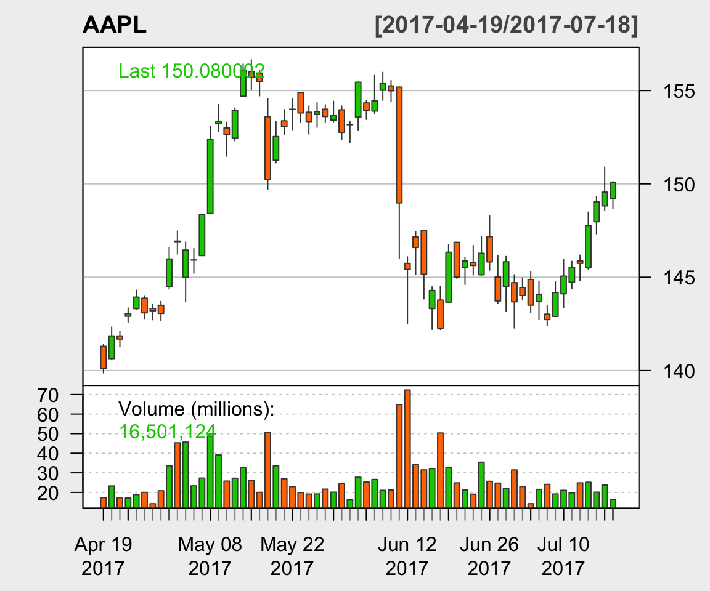

Chapter 2 Data Structures
<<<<<<< HEAD Briefly explain the types of data strucutres in R. Basically there are five ======= There are different data types that are commonly used in R among which the most important ones are the following: >>>>>>> origin/master
Numeric (or double): are used to store real numbers. Examples: -4, 12.4532, 6.
Integer: examples: 2L, 12L.
Logical (or boolean): examples:
TRUE,FALSE.Character: examples:
"a","Bonjour".
In R there are basically five type of data structures that can be used to store elements in. A data structure is said to homogeneous if it only contains elements of the same type (for example it only contains character or numeric values) and heterogenous if it contains elements of more than one type. The five type of data structrures are commonly summarized in the table similar to the one below:
| Dimension | Homogenous | Heterogeneous |
|---|---|---|
| 1 | Vector | List |
| 2 | Matrix | Dataframe |
| n | Array |
To illustrate how to use these data structures, we will consider the simple data set of five best (as ranked by ATP on 07-15-2017) single men tennis players. The data are presented in the table below:
| Name | Date of Birth | Born | Country | ATP Ranking | Prize Money | Win Percentage | Grand Slam Wins |
|---|---|---|---|---|---|---|---|
| Andy Murray | 15 May 1987 | Glasgow, Scotland | Great Britain | 1 | 60,449,649 | 78.07 | 9 |
| Rafael Nadal | 3 June 1986 | Manacor, Spain | Spain | 2 | 85,920,132 | 82.48 | 15 |
| Stan Wawrinka | 28 March 1985 | Lausanne, Switzerland | Switzerland | 3 | 30,577,981 | 63.96 | 5 |
| Novak Djokovic | 22 May 1987 | Belgrade, Serbia | Serbia | 4 | 109,447,408 | 82.77 | 12 |
| Roger Federer | 8 August 1981 | Basel, Switzerland | Switzerland | 5 | 104,445,185 | 81.80 | 18 |
2.1 Vectors
A vector has three important properties:
- Type, which corresponds the “kind” of objects in contains. It is possible to use the function
typeof()to evaluate the type of objects in a vector. - Length, i.e. the number of elements in a vector. This information can be obtained using the function
length(). - Attributes, some additional metadata attached to a vector. The functions
attr()andattributes()can be used to store and retrive attributes (more details can be found in Section 2.1.4)
For example, let us consider the number of grand slam won by the five players we are considering:
grand_slam_win = c(9, 15, 5, 12, 18)To display the values stores in grand_slam_win we could simply do:
grand_slam_win## [1] 9 15 5 12 18Alteratively, we could have create and display the value by using () around the definition, for example:
(grand_slam_win = c(9, 15, 5, 12, 18))## [1] 9 15 5 12 18Various forms of “nest concatenation” can be used to defined vectors, for example we could also define grand_slam_win as
(grand_slam_win = c(9, c(15, 5, c(12, c(18)))))## [1] 9 15 5 12 18This approach is often used to assemnble vector in various ways.
It is also possible to define vector with characters, for example we could define a vector with the player names as follows:
(players = c("Andy Murray", "Rafael Nadal", "Stan Wawrinka",
"Novak Djokovic", "Roger Federer"))## [1] "Andy Murray" "Rafael Nadal" "Stan Wawrinka" "Novak Djokovic"
## [5] "Roger Federer"2.1.1 Type
We can evaluate the kind or type of elements that are stored in a vector using the function typeof(). For example, for the vectors we just created we obtain:
typeof(grand_slam_win)## [1] "double"typeof(players)## [1] "character"This is a little suprzing as all the elements in grand_slam_win are integers it would seem natural to expect this as an output of the function typeof(). This is R considers by default any number as a “double”, expet when spefiying L after an integer. For example,
typeof(1)## [1] "double"typeof(1L)## [1] "integer"Therefore, we could express exp_res as follows:
(grand_slam_win_int = c(1L, 2L, 3L, 5L, 1L))## [1] 1 2 3 5 1typeof(grand_slam_win_int)## [1] "integer"Naturally, the difference between the two in general relatively unimportant but we can see that exp_res_int takes less “space” to two. For example, we have
object.size(grand_slam_win)## 88 bytesobject.size(grand_slam_win_int)## 72 bytes2.1.2 Coercion
As indicated earlier a vector is a homogenous data structures data, meaning that it can only contain a single type of data type. Therefore, when more than one data types are presented R coerces the data into a “shared” type. To identify this “shared” we can use this simple rule:
\[\begin{equation*} \text{logical} < \text{integer} < \text{numeric} < \text{character}, \end{equation*}\]which simply means that if a vector contains more than data type it will be of the type of the “largest” according to the above equations. Here are few examples:
# Logical + integer
(mix_logic_int = c(TRUE, 1L))## [1] 1 1typeof(mix_logic_int)## [1] "integer"# Logical + character
(mix_logic_char = c(TRUE, "Hi"))## [1] "TRUE" "Hi"typeof(mix_logic_char)## [1] "character"# Integer + numeric
(mix_int_num = c(1, 1L))## [1] 1 1typeof(mix_int_num)## [1] "double"# Integer + character
(mix_int_char = c(1L, "Hi"))## [1] "1" "Hi"typeof(mix_int_char)## [1] "character"2.1.3 Subsetting
Naturally, it is possible to “subset” the values of in our vectror in many ways. Essentially, there are four main ways of subsetting a vector. Here we’ll only discuss the first three:
- Positive Index: We can access or subset the \(i\)-th element of a vector by simply using
exp_res[i]where \(i\) is a positive number between 1 and length of the vector.
# Accesing the first element
grand_slam_win[1]## [1] 9# Accesing the third and first value
grand_slam_win[c(3, 1)]## [1] 5 9# Duplicated indices yield duplicated values
grand_slam_win[c(1, 1, 2, 2, 3, 4)]## [1] 9 9 15 15 5 12- Negative Index: We remove elements in a vector using negative indices:
# Removing the second obervation
grand_slam_win[-2]## [1] 9 5 12 18# Removing the first and fourth obserations
grand_slam_win[c(-1, -4)]## [1] 15 5 18- Logical Indices: Another usefull approach is based on logical operators:
# Access the first and fourth observations
grand_slam_win[c(TRUE, FALSE, FALSE, TRUE, FALSE)]## [1] 9 12exp_res[c(1.2, 3.4)] (which rounds things up) or exp_res[c(-1, 2)] (which doesn’t work as “mixed” indices are not permitted).
2.1.4 Attributes
Our experiment was conducted under specific conditions, say a date and a place which should be store are attributes. Indeed, objects can have arbitrary additional attributes, used to store metadata about the considered object. For example:
attr(grand_slam_win, "date") = "07-15-2017"
attr(grand_slam_win, "type") = "Men, Single"To display the vector with its attributes
grand_slam_win## [1] 9 15 5 12 18
## attr(,"date")
## [1] "07-15-2017"
## attr(,"type")
## [1] "Men, Single"To only display the attributes
attributes(grand_slam_win)## $date
## [1] "07-15-2017"
##
## $type
## [1] "Men, Single"It is also possible to extract a specific attribute
attr(grand_slam_win, "date")## [1] "07-15-2017"2.1.5 Adding labels
In some cases, it might be useful to add label to vectors. For example, we could defined the vector grand_slam_win and use as labels the player’s names, i.e.
(grand_slam_win = c("Andy Murray" = 9, "Rafael Nadal" = 15,
"Stan Wawrinka" = 5, "Novak Djokovic" = 12,
"Roger Federer" = 18))## Andy Murray Rafael Nadal Stan Wawrinka Novak Djokovic Roger Federer
## 9 15 5 12 18The main advantage of this approach is that the number of grand slam won can now be referred to by the player’s name. For example:
grand_slam_win["Andy Murray"]## Andy Murray
## 9grand_slam_win[c("Andy Murray","Roger Federer")]## Andy Murray Roger Federer
## 9 18All labels (players’ names in our case) can be obtained witht the function names, i.e.
names(grand_slam_win)## [1] "Andy Murray" "Rafael Nadal" "Stan Wawrinka" "Novak Djokovic"
## [5] "Roger Federer"2.1.6 Useful functions with vectors
Add some text here
length() sum() mean() sort() and order()
For example
length(grand_slam_win)## [1] 5sum(grand_slam_win)## [1] 59mean(grand_slam_win)## [1] 11.8To sort the player by number of grand slam we could use the function order() which returns the position of the elements of a vector sorted in an ascending manner,
order(grand_slam_win)## [1] 3 1 4 2 5Therefore, we can sort the players as follow
players[order(grand_slam_win)]## [1] "Stan Wawrinka" "Andy Murray" "Novak Djokovic" "Rafael Nadal"
## [5] "Roger Federer"showing the Roger Federer won the most grand slam. Another related function is sort() which simply sorts the elements of a vector (in an ascending manner). For example,
sort(grand_slam_win)## Stan Wawrinka Andy Murray Novak Djokovic Rafael Nadal Roger Federer
## 5 9 12 15 18which is compact version of
grand_slam_win[order(grand_slam_win)]## Stan Wawrinka Andy Murray Novak Djokovic Rafael Nadal Roger Federer
## 5 9 12 15 18There are of course many other usefull to dealing with vectors.
2.1.7 Creation sequences
When uing R for statstical programming or even data analysis it is very common to create sequences of numbers. Here are three common ways for generatign such sequences:
from:to: This method is quite inituitive and very compact. For example:
(x = 1:3)## [1] 1 2 3(y = 3:1)## [1] 3 2 1(w = -1:-4)## [1] -1 -2 -3 -4(z = 1.3:3)## [1] 1.3 2.3seq_len(n): This function provides a simple way to generate a sequence from 1 to an arbitrary numbern. In general,1:nandseq_len(n)are equivalent with the notable exeptions of the casesn = 0andn < 0. The reason for these exeption will become clear in Section 3.2.2.1. Let’s see a few examples:
n = 3
1:n## [1] 1 2 3seq_len(n)## [1] 1 2 3n = 0
1:n## [1] 1 0seq_len(n)## integer(0)seq(a, b, by/length.out = d): This function can be used to create more “complexe” sequences. It either be used to create a sequence fromatobby increments ofd(using the optionby) or of a total length ofd(using the optionlength.out). A few examples:
(x = seq(1, 2.8, by = 0.4))## [1] 1.0 1.4 1.8 2.2 2.6(y = seq(1, 2.8, length.out = 6))## [1] 1.00 1.36 1.72 2.08 2.44 2.80Maybe it would be interesting to add something rep() for example:
rep(c(1,2), times = 3, each = 1)## [1] 1 2 1 2 1 2rep(c(1,2), times = 1, each = 3)## [1] 1 1 1 2 2 22.1.8 Example: Apple Stock Price
How to get today’s date
(today = Sys.Date())## [1] "2017-07-17"Three monmths ago
(three_months_ago = seq(today, length = 2, by = "-3 months")[2])## [1] "2017-04-17"Let’s download Apple stock price
library(quantmod)
getSymbols("AAPL", from = three_months_ago, to = today)## [1] "AAPL"candleChart(AAPL, theme='white', type='candles')
Let’s compute some returns…
\[\begin{equation} r_t = \frac{S_t - S_{t-1}}{S_{t-1}} \end{equation}\]where \(r_t\) are the return, \(S_t\) the stock price. This is implemented in the function ClCl() of the package quantmod. For example, we can create a vector of returns as follows
AAPL_returns = as.numeric(na.omit(ClCl(AAPL)))na.omit to remove missing value as if we have \(n+1\) stock prices we only \(n\) returns as.numeric to transform into a vector. We can now compute mean and median return over the period
mean(AAPL_returns)## [1] 0.0009362567median(AAPL_returns)## [1] 0.001104352Excess Kurtosis can be defined for a random variable \(X\) as
\[\begin{equation} \text{Kurt} = \frac{{E}\left[\left(X - E[X]\right)^4\right]}{\left({E}\left[\left(X - E[X]\right)^2\right]\right)^2} - 3 \end{equation}\]The reason excess is …. A common estimator of the excess Kurtosis is
\[\begin{equation} k = \frac{\frac{1}{n} \sum_{t = 1}^{n} \left(r_t -\bar{r}\right)^4}{\left(\frac{1}{n} \sum_{t = 1}^{n} \left(r_t -\bar{r}\right)^2 \right)^2} - 3 \end{equation}\]where \(\bar{k}\) denotes the sample average of the returns, i.e.
\[\begin{equation} \bar{k} = \frac{1}{n} \sum_{i = 1}^n r_i \end{equation}\]mu = mean(AAPL_returns)
(k = mean((AAPL_returns - mu)^4)/(mean((AAPL_returns - mu)^2))^2 - 3)## [1] 2.022523which is quite high tends to indicate the returns have a heavier tails than the normal distribution.
2.2 Matrix
(mat = matrix(1:12, ncol = 4, nrow = 3))## [,1] [,2] [,3] [,4]
## [1,] 1 4 7 10
## [2,] 2 5 8 11
## [3,] 3 6 9 12explain cbind and rbind
players = c("Andy Murray", "Rafael Nadal", "Stan Wawrinka",
"Novak Djokovic", "Roger Federer")
grand_slam_win = c(9, 15, 5, 12, 18)
win_percentage = c(78.07, 82.48, 63.96, 82.77, 81.80)
(mat = cbind(grand_slam_win, win_percentage))## grand_slam_win win_percentage
## [1,] 9 78.07
## [2,] 15 82.48
## [3,] 5 63.96
## [4,] 12 82.77
## [5,] 18 81.80explain rownames colnames
rownames(mat) <- players
colnames(mat) <- c("GS win", "Win rate")
mat## GS win Win rate
## Andy Murray 9 78.07
## Rafael Nadal 15 82.48
## Stan Wawrinka 5 63.96
## Novak Djokovic 12 82.77
## Roger Federer 18 81.802.2.1 Subsetting
mat[c("Stan Wawrinka", "Roger Federer"), ]## GS win Win rate
## Stan Wawrinka 5 63.96
## Roger Federer 18 81.80mat[c(1, 3), ]## GS win Win rate
## Andy Murray 9 78.07
## Stan Wawrinka 5 63.96mat[, 2]## Andy Murray Rafael Nadal Stan Wawrinka Novak Djokovic Roger Federer
## 78.07 82.48 63.96 82.77 81.80mat[1:3, 1]## Andy Murray Rafael Nadal Stan Wawrinka
## 9 15 52.2.2 Useful fun + matrix algebra
to do
2.2.3 Example: variance as matrix
n = 100
x = rnorm(n, 0, sqrt(4))
(sig2 = 1/n*sum((x - mean(x))^2))## [1] 3.180847(sig2_mat = as.numeric(1/n*t(x)%*%x - (1/n*t(rep(1,n))%*%x)^2))## [1] 3.180847It is also interesting to compare sig2 and sig2_mat
sig2 - sig2_mat## [1] 0numerical error
2.3 Array
2.4 List
2.5 Dataframe
2.5.1 Example: Making Maps
birth_place = c("Glasgow, Scotland", "Manacor, Spain", "Lausanne, Switzerland",
"Belgrade, Serbia", "Basel, Switzerland")library(ggmap)
glasgow_coord = geocode("Glasgow, Scotland")glasgow_coord## lon lat
## 1 -4.251806 55.86424birth_coord = geocode(birth_place)birth_coord## lon lat
## 1 -4.251806 55.86424
## 2 3.209532 39.56972
## 3 6.632273 46.51965
## 4 20.448922 44.78657
## 5 7.588576 47.55960class(birth_coord)## [1] "data.frame"birth_coord$Players = players
birth_coord$GS = grand_slam_winbirth_coord## lon lat Players GS
## 1 -4.251806 55.86424 Andy Murray 9
## 2 3.209532 39.56972 Rafael Nadal 15
## 3 6.632273 46.51965 Stan Wawrinka 5
## 4 20.448922 44.78657 Novak Djokovic 12
## 5 7.588576 47.55960 Roger Federer 18Let’s represent this information graphically. We haven’t seen how to make graph yet so don’t worry to much about the details of how this graph is made
library(mapproj)
map <- get_map(location = 'Switzerland', zoom = 4)
ggmap(map) + geom_point(data = birth_coord,
aes(lon, lat, col = Players, size = GS)) +
scale_size(name="Grand Slam Wins") +
xlab("Longitude") + ylab("Latitude")2.6 Data frames
A data frame is the most common way of storing data in R, it has a 2D structure and shares properties of both the matrix and the list.
We can create a data frame using data.frame()
### Creation
players = c("Andy Murray", "Rafael Nadal", "Stan Wawrinka",
"Novak Djokovic", "Roger Federer")
grand_slam_win = c(9, 15, 5, 12, 18)
date_of_birth = c("15 May 1987", "3 June 1986", "28 March 1985",
"22 May 1981", "8 August 1981")
country = c("Great Britain", "Spain", "Switzerland",
"Serbia", "Switzerland")
ATP_ranking = c(1, 2, 3, 4, 5)
prize_money = c(60449649, 85920132, 30577981, 109447408, 104445185)
tennis = data.frame(date_of_birth, grand_slam_win, country,
ATP_ranking, prize_money)
dimnames(tennis)[[1]] = players
tennis## date_of_birth grand_slam_win country ATP_ranking
## Andy Murray 15 May 1987 9 Great Britain 1
## Rafael Nadal 3 June 1986 15 Spain 2
## Stan Wawrinka 28 March 1985 5 Switzerland 3
## Novak Djokovic 22 May 1981 12 Serbia 4
## Roger Federer 8 August 1981 18 Switzerland 5
## prize_money
## Andy Murray 60449649
## Rafael Nadal 85920132
## Stan Wawrinka 30577981
## Novak Djokovic 109447408
## Roger Federer 104445185We can check if we have achived our gooal by using:
is.data.frame(tennis)## [1] TRUE2.6.1 Combination
Different data frames can also be combined. Let say we want to add some ifomrmation to our initial table e.g. the player’s height and if he is right-handed or letf-handed.
We can do so by using cbind() and rbind():
height <- c(1.90, 1.85, 1.83, 1.88, 1.85)
hand <- c("R","L","R","R","R")
(tennis = cbind(tennis, data.frame(height, hand)))## date_of_birth grand_slam_win country ATP_ranking
## Andy Murray 15 May 1987 9 Great Britain 1
## Rafael Nadal 3 June 1986 15 Spain 2
## Stan Wawrinka 28 March 1985 5 Switzerland 3
## Novak Djokovic 22 May 1981 12 Serbia 4
## Roger Federer 8 August 1981 18 Switzerland 5
## prize_money height hand
## Andy Murray 60449649 1.90 R
## Rafael Nadal 85920132 1.85 L
## Stan Wawrinka 30577981 1.83 R
## Novak Djokovic 109447408 1.88 R
## Roger Federer 104445185 1.85 R2.6.2 Subsetting
Like for vectors, it is also possible to subset the values that we have stored in our data frames. Since data frames possess the characteristics of both lists and matrices: if you subset with a single vector, they behave like lists; if you subset with two vectors, they behave like matrices.
# Let say we want only want to know the country and date of
# birth of the players
# There are two ways to select columns from a data frame
# Like a list:
tennis[c("country", "date_of_birth")]## country date_of_birth
## Andy Murray Great Britain 15 May 1987
## Rafael Nadal Spain 3 June 1986
## Stan Wawrinka Switzerland 28 March 1985
## Novak Djokovic Serbia 22 May 1981
## Roger Federer Switzerland 8 August 1981# Like a matrix
tennis[, c("country", "date_of_birth")]## country date_of_birth
## Andy Murray Great Britain 15 May 1987
## Rafael Nadal Spain 3 June 1986
## Stan Wawrinka Switzerland 28 March 1985
## Novak Djokovic Serbia 22 May 1981
## Roger Federer Switzerland 8 August 1981# To acces a single element, let say the date of birth,
# you can also use:
tennis$date_of_birth## [1] 15 May 1987 3 June 1986 28 March 1985 22 May 1981 8 August 1981
## 5 Levels: 15 May 1987 22 May 1981 28 March 1985 ... 8 August 19812.6.3 Application: Non-parametric bootstrap
Suppose we ask 10 students how much time they work at home for their calculus class, we obtain the following results (in hour)
student_work <- c(0, 0, 0, 0.25, 0.25, 0.75, 0.75, 1, 1.25, 4)We can compute the mean time spent
mean(student_work)## [1] 0.825ADD SOMETHING ON T TEST
t.test(student_work)$conf.int## [1] -0.03495865 1.68495865
## attr(,"conf.level")
## [1] 0.95We can see that our confidence interval includes a negative values which clearly isn’t meaningful. Solution: (non-parametric) bootstrap which works as follows….. ADD SOMETHING
Here is a simple function to implement this approach:
# Number of boostrap replications
B = 500
# Compute the length of vector
n = length(student_work)
# Confidence level
alpha = 0.05
# Initialisation of
boot_mean = rep(NA, B)
for (i in 1:B){
student_work_star = student_work[sample(1:n, replace = TRUE)]
boot_mean[i] = mean(student_work_star)
}
quantile(boot_mean, c(alpha/2, 1 - alpha/2))## 2.5% 97.5%
## 0.275000 1.613125#hist(boot_mean, probability = TRUE)